Photo credits
These are representative photos of each dish type from Wikimedia Commons and Foodiesfeed. They are not photos taken at Swad Sangam and are labelled “Representative” on the menu until the restaurant uploads its own photos. Licences: CC0 / CC BY / CC BY-SA (Wikimedia) and the Foodiesfeed free licence — see each source page. AI-generated stock photos are not used.
| Dish | Photo | Author | Licence | Source |
|---|---|---|---|---|
| Mooli Paratha |  | Dr. Chinchu C. | CC BY 4.0 | source |
| Fried Veg Momo |  | Dhanwanthkurup | CC BY-SA 4.0 | source |
| Special Veg Chilli Garlic Momo |  | Medhi jyoti | CC BY 4.0 | source |
| Veg Rice with Roti Thali |  | Rajeeb Dutta | CC BY-SA 4.0 | source |
| Roti Thali |  | Devika | CC BY-SA 2.0 | source |
| Special Thali |  | Sarahbatra | CC BY-SA 4.0 | source |
| Chicken Thali |  | Wind Hashira | CC BY-SA 4.0 | source |
| Channa Masala |  | Seena.ge | CC BY-SA 4.0 | source |
| Veg Jalfrezi |  | Biswarup Ganguly | CC BY 3.0 | source |
| Paneer Do Pyaza |  | Shashank7200 | CC BY-SA 4.0 | source |
| Chicken Handi |  | Miansari66 | CC0 | source |
| Chilli Chicken + Fried Rice/Noodles |  | Vis M | CC BY-SA 4.0 | source |
| Website banner |  | Rajeeb Dutta | CC BY-SA 4.0 | source |
| Egg Chowmein |  | Foodiesfeed | Foodiesfeed licence (free, CC0-like) | source |
| Chicken Hakka Noodles | | Foodiesfeed | Foodiesfeed licence (free, CC0-like) | source |
| Chicken Chilli Garlic Noodles | | Foodiesfeed | Foodiesfeed licence (free, CC0-like) | source |
| Veg Hakka Noodles | 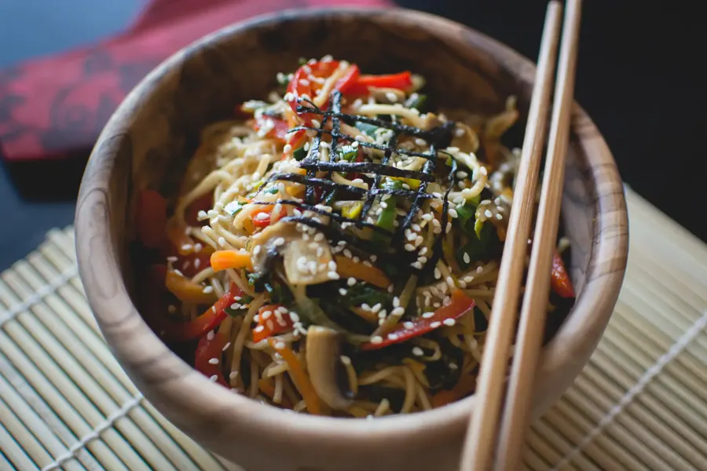 | Foodiesfeed | Foodiesfeed licence (free, CC0-like) | source |
| Chilli Garlic Noodles | Foodiesfeed | Foodiesfeed licence (free, CC0-like) | source | |
| Chicken Spring Roll |  | Foodiesfeed | Foodiesfeed licence (free, CC0-like) | source |
| Veg Sandwich |  | Foodiesfeed | Foodiesfeed licence (free, CC0-like) | source |
| Veg Cheese Sandwich | | Foodiesfeed | Foodiesfeed licence (free, CC0-like) | source |
| Plain Omelette |  | Foodiesfeed | Foodiesfeed licence (free, CC0-like) | source |
| Masala Omelette | | Foodiesfeed | Foodiesfeed licence (free, CC0-like) | source |
| Chicken Kathi Roll | 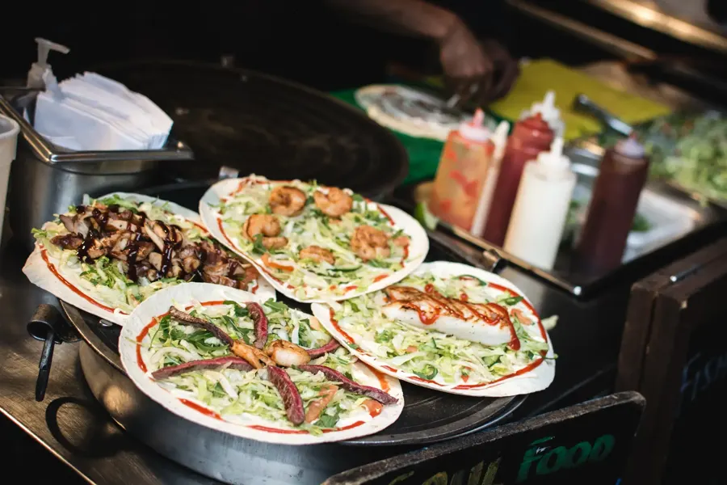 | Foodiesfeed | Foodiesfeed licence (free, CC0-like) | source |
| Paneer Burger |  | Foodiesfeed | Foodiesfeed licence (free, CC0-like) | source |
| Veg Burger | 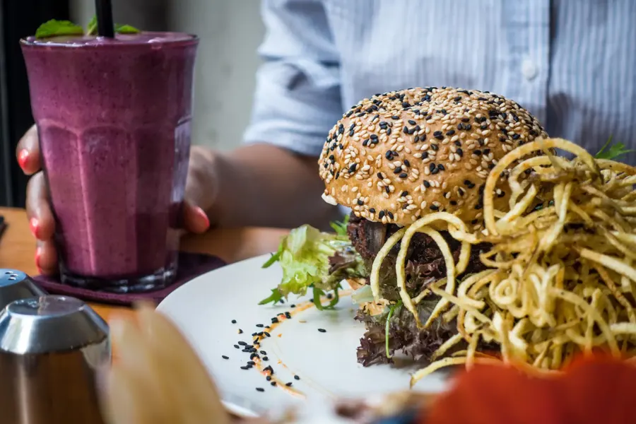 | Foodiesfeed | Foodiesfeed licence (free, CC0-like) | source |
| Arrabbiata Pasta (Red Sauce) – Veg | 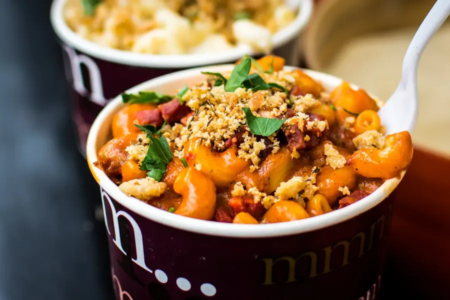 | Foodiesfeed | Foodiesfeed licence (free, CC0-like) | source |
| Aglio Pasta – Veg | 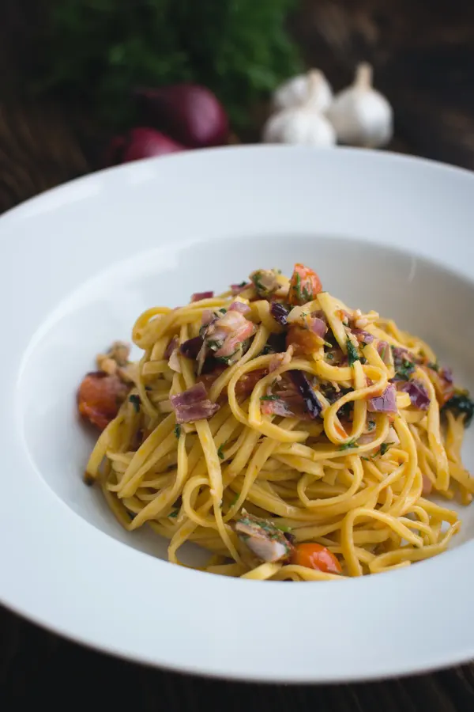 | Foodiesfeed | Foodiesfeed licence (free, CC0-like) | source |
| Masala Chaanch |  | Foodiesfeed | Foodiesfeed licence (free, CC0-like) | source |
| Chicken Lemon Coriander Soup |  | Foodiesfeed | Foodiesfeed licence (free, CC0-like) | source |
| Cold Coffee |  | Foodiesfeed | Foodiesfeed licence (free, CC0-like) | source |
| Coffee |  | Foodiesfeed | Foodiesfeed licence (free, CC0-like) | source |
| Green Tea |  | Foodiesfeed | Foodiesfeed licence (free, CC0-like) | source |
| Plain Dahi | 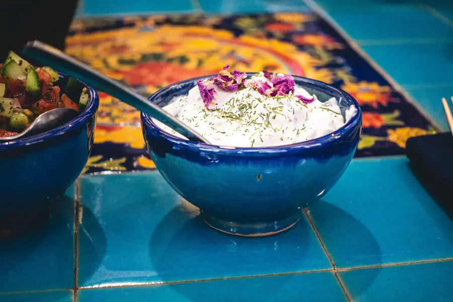 | Foodiesfeed | Foodiesfeed licence (free, CC0-like) | source |
| Cucumber Salad | 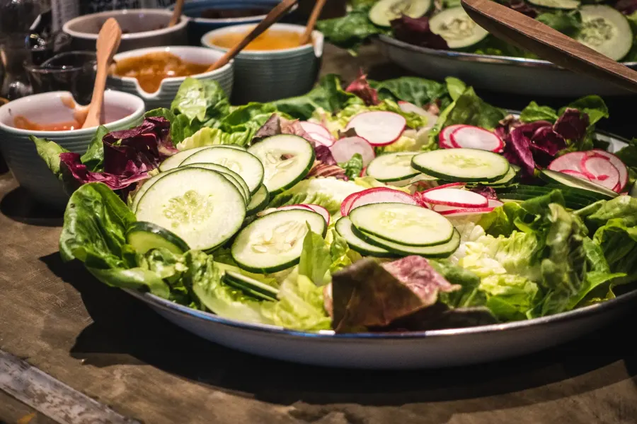 | Foodiesfeed | Foodiesfeed licence (free, CC0-like) | source |
| Green Salad | 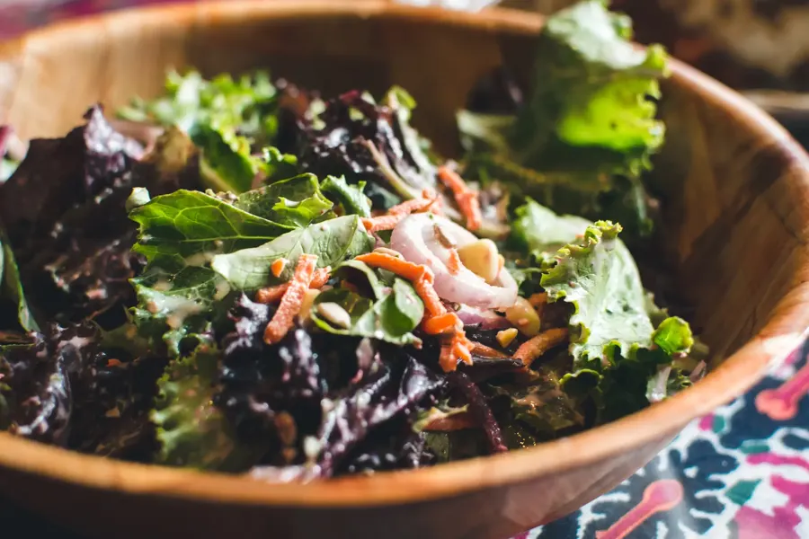 | Foodiesfeed | Foodiesfeed licence (free, CC0-like) | source |
| Boiled Egg | 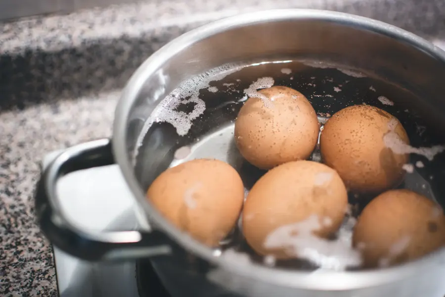 | Foodiesfeed | Foodiesfeed licence (free, CC0-like) | source |
| Plain Rice | 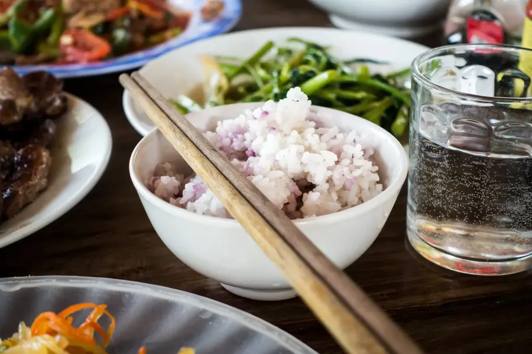 | Foodiesfeed | Foodiesfeed licence (free, CC0-like) | source |
| Tomato Soup | 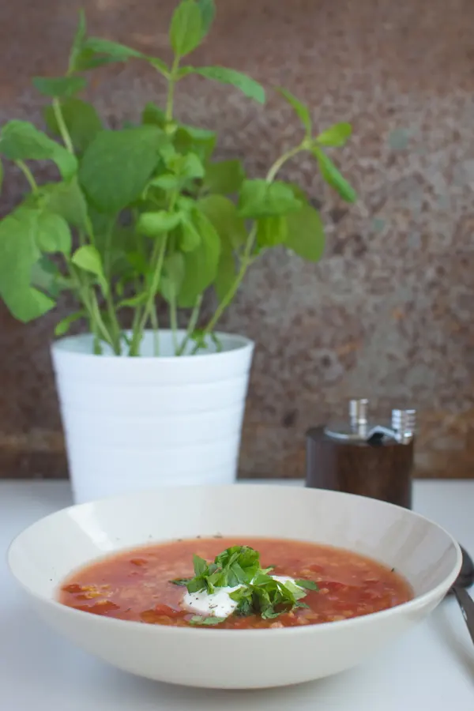 | Foodiesfeed | Foodiesfeed licence (free, CC0-like) | source |